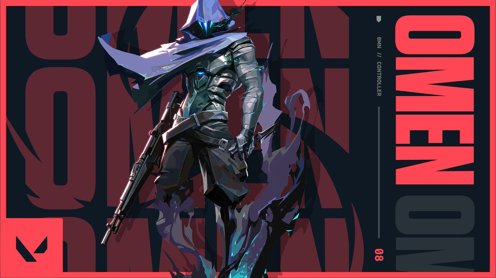

Ability 1(shrouded step)-This ability is a teleport that can be used to trick enemies.When u press the e key,u basically see a dark blue circle in front of u.That circle is where u are gonna teleport.But this teleport makes a noise that can tell the enemies where u teleported.This can be used to get in enemy areas or get out of enemy areas.There will be a bar on ur screen that will indicate when u will teleport.People can still shoot u if u are in the proccess of teleporting and they see where u are teleporting.This has 2 charges.Each charge costs 100 creds
Ability 2(dark cover)-This ability is a smoke that can be used to cover certain areas of a site or u can use this to make cover for urself.When u press the e key,u enter a dimension where u see the map.Nobody can see through ur smoke but they can shoot through it.People can use sovas intel to see whats on the other side of the smoke.It has 2 charges
Ability 3(paranoia)-This ability is a straight flash that costs 400 creds and has 1 charge.equip a blinding orb. FIRE to throw it forward, briefly reducing the vision range and deafening all players it touches. This projectile can pass through walls.
Ultimate 3(from the shadows)-Equip a tactical map. Fire to begin teleporting to the selected location. While teleporting, Omen will appear as a Shade that can be destroyed by an enemy to cancel his teleport, or press EQUIP for Omen to cancel his teleport.